Asynchronous Agentic Orchestration at Scale
Angshul Majumdar · August 20, 2026
Large agent systems are often described through global state, global planning, or synchronized rounds. That is the wrong runtime abstraction when only a tiny fraction of the system changes at any instant.
The central question is simple:
If a system contains tens or hundreds of thousands of agents, but only a few agents produce new information at a given instant, why should the orchestrator recompute over the entire population?
This article develops an event-local answer. The orchestration layer is built around sparse push events, bounded structural locality, worker-local state learning, sparse transition memory with forgetting and eviction, local constrained intervention, exact sharded resource reservation, and concurrent processing of events whose mutable read/write footprints do not conflict.
The architecture is agent-model agnostic. An agent can be a neural model, symbolic solver, simulator, theorem prover, planner, sensor process, search process, or another computational worker. The orchestration layer does not require an LLM or a GPU.
The development below follows the design logic of the system rather than presenting formal theorem/proof statements. It also reports the empirical findings that changed the architecture, including the failure of automatic cross-agent belief propagation and the poor startup economics of worker-specific conditional-mutual-information pruning.
The operating regime
Let there be N agents,
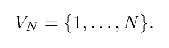
Each agent has a small symbolic state
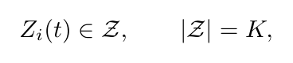
but the orchestrator is not driven by synchronized global rounds. It is driven by asynchronous push events.
At event t, only a response set
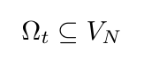
has produced new information. The intended regime is
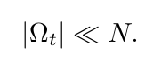
The practical architecture is built around the size of this event, not the size of the installed system.
The other key structural contract is bounded locality. An undirected structural graph specifies which agents may directly interact. For each agent i, the local neighborhood N(i) is small relative to the total population. Sparse response alone does not imply locality: the two are separate properties. A sparse event in a globally coupled system can still require global work.
The framework therefore applies to the regime
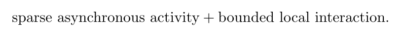
When either part fails, the method is not supposed to hide it.
Why the obvious global constructions are the wrong runtime primitives
The architecture was developed by starting from several natural global constructions and removing them one by one.
Joint dynamic programming
A joint symbolic state is
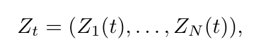
so a generic table over the joint state has K^N entries. An exact joint Viterbi-style recursion has the form
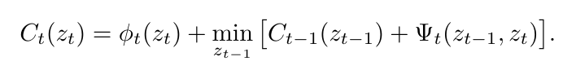
This representation is unsuitable for the runtime of a very large persistent system. The final controller does not maintain a global dynamic-programming table and does not reconstruct a global posterior after every event.
Global action scanning
Even if state inference is local, scanning every possible intervention after every event reintroduces direct dependence on N. If only the responding agents and their bounded structural neighborhoods can have nonzero immediate intervention gain, the natural candidate set is
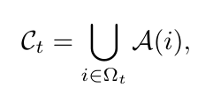
where A(i) is the bounded action neighborhood of agent i.
The local-versus-global experiment makes this distinction explicit. At N=300,000, the local procedure took about 379 µs while the naive global scan took about 17.1 ms, a 45.25x timing ratio in the tested implementation. Both returned the same effective decision gain because the experiment deliberately placed nonzero gains inside the known structural contract.
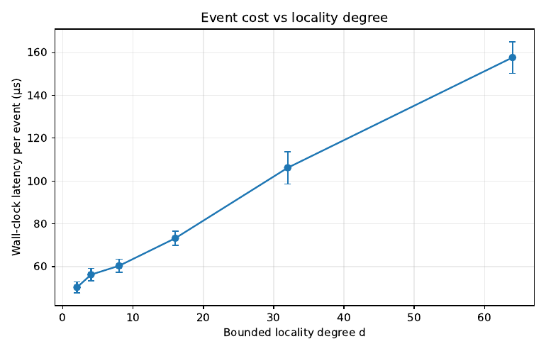
Dense transition tensors
A bounded local context can still have a large formal Cartesian product. Allocating a dense table for every possible context is unnecessary because most contexts are never visited.
The implementation therefore allocates a transition record only when a context actually occurs:
(agent i, realized context c) -> K-vector of empirical countsThis changes storage from the size of the formal context space to the size of the realized operating history.
Sparse allocation alone does not solve persistent lifetime growth. That is why the final version combines sparse allocation with explicit eviction, described below.
Automatic belief propagation
A structural edge means that influence may occur. It does not mean that the posterior state of one agent should be copied or diffused into another agent.
The first integrated controller did exactly that. Repeated ablation showed that it was a bad idea. In six paired environments, the no-propagation controller had lower mean pre-action risk than the adaptive-propagation controller in all six runs.
Mean risks:
| controller | mean pre-action risk |
|---|---|
| no cross-agent propagation | 0.071261 |
| adaptive propagation | 0.079512 |
| fixed propagation/memory | 0.080671 |
| random feasible control | 0.134869 |
| no control | 0.289823 |
The paired risk difference no propagation - full was
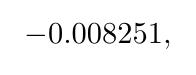
with a Student-t 95% interval approximately
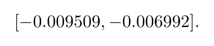
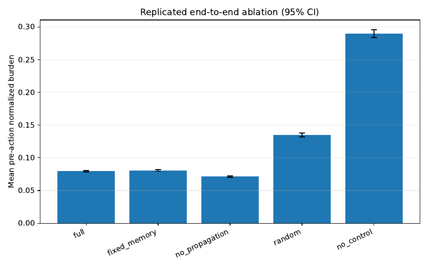
The final default is therefore:
Update the state estimate of a responding agent because it responded. Do not update a neighbor merely because it is adjacent.
Structural locality remains crucial for transition context, action generation, cascade analysis, and conflict ownership. It is not an automatic inference rule.
Push-based asynchronous event clock
Agents push results to the orchestrator. The orchestrator does not repeatedly scan all agents to discover who changed.
Each event provides at least:
Event
event_id
responders: Omega_t
observations for responders
elapsed time since each responder's previous reportThis is important because an event-local algorithm is useful only if event discovery is itself event-driven. A hidden population scan would destroy the point of the design.
The main event loop is therefore organized around arriving responder IDs.
Local symbolic state learning
Each agent maintains a local state distribution
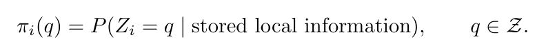
When agent i responds, the orchestrator constructs a realized local context. A typical context contains:
- the agent's own cached state representation;
- bounded structural-neighbor summaries;
- relevant cached action state;
- a bin for elapsed time since the agent last responded;
- where needed, bins describing staleness of cached neighbor information.
The implementation intentionally avoids using a hard decoded symbol as the only Bayesian state representation. Hard decisions can be used for compact context indexing when an application wants them, but the state posterior itself remains available.
A smoothed local transition estimate is
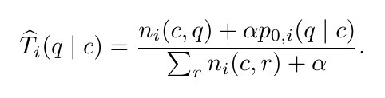
The observation likelihood is fused locally:
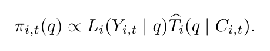
Only agents in Omega_t receive this update.
Elapsed time is handled by bins, deliberately
The system is asynchronous, so elapsed time matters. The implementation does not require a continuous-time Markov model. It uses a finite elapsed-time map
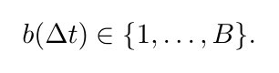
The bin edges may be fixed by the application or estimated from empirical quantiles.
The paper tested 1, 2, 4, 8, 16, 32, and 64 bins. Held-out log loss was:
| bins | mean held-out log loss |
|---|---|
| 1 | 1.0618 |
| 2 | 1.0454 |
| 4 | 1.0379 |
| 8 | 1.0354 |
| 16 | 1.0357 |
| 32 | 1.0392 |
| 64 | 1.0474 |
The practical optimum in this synthetic test was around 8--16 bins. More temporal resolution eventually increased variance rather than improving prediction.
Forgetting: adaptation without permanent historical commitment
Persistent systems drift. Transition counts therefore use exponential forgetting.
For a realized context c, empirical counts are discounted approximately as
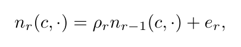
where e_r is the new observation increment.
The implementation applies this decay lazily. A key remembers its last local-response stamp. When the key is accessed again, the accumulated factor is applied once. This avoids touching every stored key on every event.
On a six-state transition process with an abrupt midstream change, late post-drift log loss was:
forgetting factor rho |
late post-drift log loss |
|---|---|
| 1.0000 | 1.6769 |
| 0.9995 | 1.5693 |
| 0.9990 | 1.5728 |
| 0.9950 | 1.6106 |
| 0.9900 | 1.6684 |
Moderate forgetting improved adaptation; aggressive forgetting paid a variance penalty.
Sparse memory still needs eviction
A sparse dictionary avoids a dense combinatorial tensor, but a persistent system can still accumulate keys forever. The final design therefore gives every agent an expiration deque.
For each local response of agent i:
- increment the local response clock;
- pop expiration records older than the configured horizon
H; - delete a context only when the popped stamp is still its most recent access;
- access or create the current context;
- append its new
(stamp, key)record to the deque.
Stale duplicate deque records are harmless. Each local response inserts one deque record and eventually removes at most one corresponding record, so the maintenance cost is amortized constant time per local response.
The corresponding memory component is SparseTransitionMemory.
A design horizon can be translated from a forgetting upper bound and tolerance by requiring the unobserved geometric tail to be small:
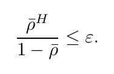
Equivalently,
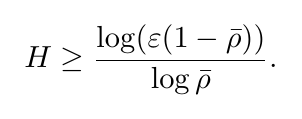
This conversion can produce very long horizons when forgetting is weak. For example, with epsilon=0.01, rho_bar=0.999 gives a horizon on the order of 1.15e4 local responses. That is why rho and H must be treated as a joint engineering choice.
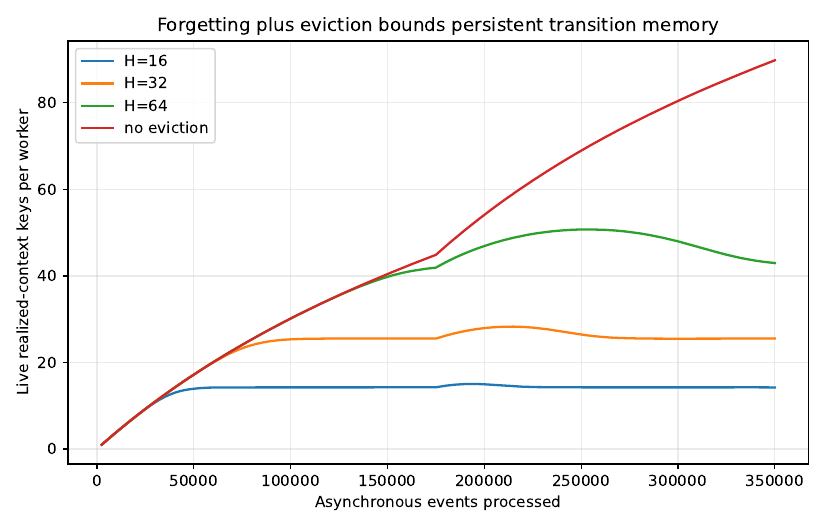
Joint forgetting/eviction result
The final experiment corrected an earlier implementation mismatch: the empirical counts are decayed, but the Bayesian prior pseudo-counts are fixed, exactly as in the estimator above.
Six independent streams were run per (rho, H) cell. At rho=0.995:
| H | post-drift log loss | mean live keys |
|---|---|---|
| 16 | 1.6367 | 12.57 |
| 32 | 1.6443 | 20.09 |
| 64 | 1.6200 | 28.16 |
| 128 | 1.5777 | 35.79 |
| infinity | 1.5719 | 96.00 |
The correct conclusion is not that eviction is an accuracy trick. Eviction is a memory control mechanism with a tunable prediction cost. The forgetting rate and lifetime horizon must be tuned together.
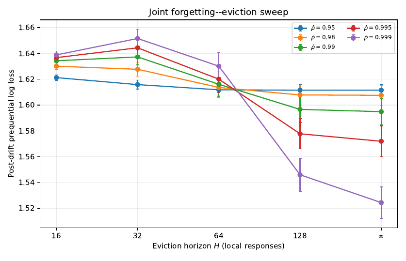
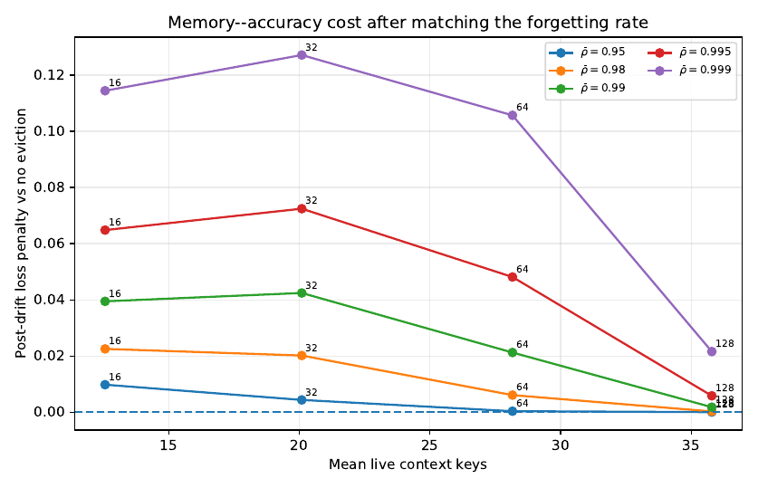
Persistent memory is therefore bounded in operating age, not independent of the number of installed agents. If every agent keeps a bounded number of finite-state count vectors and expiration records, total persistent state still scales linearly with N.
Structural candidate generation
Let A(i) be the actions that can immediately matter for agent i under the application's structural contract. The event-local candidate set is
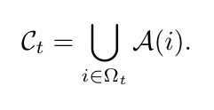
If every responder has at most a local actions, then the event candidate set cannot contain more than a |Omega_t| actions before duplicate removal.
This simple step is the main mechanism that prevents action selection from becoming a population scan.
Optional spatial-decay extension
Some applications can justify a distance-dependent influence law of the form
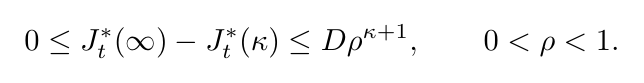
The left inequality follows from nested feasible sets; the application only needs to supply the upper decay law.
A tolerance epsilon translates into
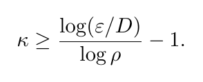
This is a parameter translation, not a universal locality guarantee. The resulting neighborhood can be uselessly large. For degree d=8 and epsilon/D=0.01:
rho |
radius kappa |
tree-ball upper bound |
|---|---|---|
| 0.3 | 3 | 457 |
| 0.5 | 6 | 156,865 |
| 0.7 | 12 | 18,455,049,601 |
At moderate decay, a derived radius can exceed the entire population. The fixed one-hop/bounded-neighborhood structural contract is therefore the default mechanism in the implementation. Spatial decay is only useful when a domain can actually justify a fast decay rate.
For d=2, the tree-ball expression is the separate linear form 1 + 2 kappa. On graphs with short cycles, tree-ball counting is an upper bound before duplicate removal and may over-count heavily.
Cascades are an optional extension, not a hidden assumption
A bounded local graph can still produce a large cascade if local effects reproduce too strongly. The synthetic cascade stress test therefore separates two regimes:
- subcritical-like local propagation, where affected-set size remains modest over the tested range;
- extensive propagation, where a local event can expand to a substantial fraction of the population.
The runtime does not call both regimes "scalable".
A useful operational quantity is the number of newly activated children produced by an active parent. If the conditional reproduction level is below one, expected cascade size has a geometric form. But the online estimator is only a lagging diagnostic; it cannot prevent the first unexpected supercritical event.
The runtime therefore combines two mechanisms:
- a rolling Azuma-style upper diagnostic for the recent average conditional offspring rate;
- an unconditional hard cap on the number/radius of agents an event is allowed to activate before being stopped or escalated.
The corresponding diagnostic component is RollingCascadeDiagnostic.
Cascade stress results
Four seed responders, degree eight:
| N | adaptive mean cascade | adaptive p95 | fixed lambda=0.95 mean |
no-forgetting mean |
|---|---|---|---|---|
| 1,000 | 171.6 | 280.1 | 498.3 | 682.3 |
| 3,000 | 195.0 | 317.1 | 681.3 | 1,091.7 |
| 10,000 | 200.3 | 330.1 | 771.5 | 1,301.6 |
| 30,000 | 198.4 | 333.0 | 761.6 | 1,377.3 |
| 100,000 | 204.9 | 341.0 | 794.7 | 1,379.9 |
The mean cascade of roughly 205 from four seeds is operationally substantial even though it is only about 0.205% of N=100,000.
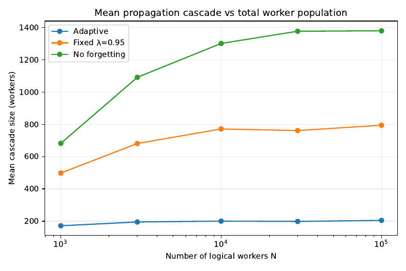
Finite-range phase diagnostic
Degree and coupling strength were swept over 30 cells. A two-population log-log slope was used only as a descriptive finite-range diagnostic. Of the 30 cells:
- 21 were bounded-like under the chosen threshold;
- 3 were intermediate;
- 6 were clearly extensive-like.
At high degree and strong coupling, the observed exponent approached one.
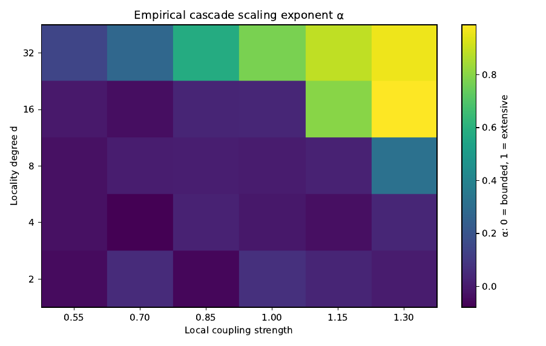
This is not presented as a universal phase-transition theorem. It is a stress test that shows exactly where the local architecture should stop pretending that a cascade is small.
Local constrained intervention
The local objective is application-defined:
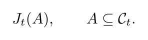
The runtime does not assume submodularity.
For a current selected set A, the marginal gain of candidate j is
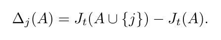
There may be several hard resource budgets and pairwise conflicts. Let action j have resource vector c_j, with shard-local budget B. The default score is the gain divided by normalized resource consumption:
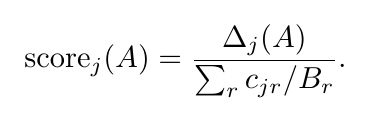
At every step:
- drop candidates that violate remaining resource capacity;
- drop candidates conflicting with already selected actions;
- compute local marginal gains;
- select the highest positive gain/resource score;
- stop when no positive feasible marginal remains or the action cap is reached.
The corresponding action-selection routine is ratio_greedy.
Greedy versus exact
On random non-submodular quadratic local objectives, at 18 candidates the original unconstrained greedy experiment gave about 2.10% mean regret and 9.04% p95 regret, while exhaustive search was roughly three orders of magnitude slower in that small-set benchmark.
For resource- and conflict-constrained instances, the gain/resource score outperformed raw marginal and a simple scarcity-price rule in the tested distribution.
One-swap refinement
Greedy versus exhaustive is not the only choice. A single best-improving add/swap pass costs O(|C_t|^2) local evaluations and closes much of the gap at modest local sizes.
On 50 paired instances per candidate count:
| candidates | ratio-greedy mean regret | one-swap mean regret | paired improvement | greedy runtime | one-swap runtime | exact runtime |
|---|---|---|---|---|---|---|
| 8 | 4.11% | 1.44% | 2.68 pp | 0.66 ms | 0.94 ms | 2.75 ms |
| 10 | 4.51% | 1.93% | 2.59 pp | 0.70 ms | 1.03 ms | 6.54 ms |
| 12 | 5.92% | 3.19% | 2.72 pp | 1.18 ms | 1.56 ms | 14.89 ms |
| 14 | 7.45% | 4.86% | 2.59 pp | 1.41 ms | 2.22 ms | 31.80 ms |
| 16 | 6.76% | 3.24% | 3.52 pp | 1.66 ms | 2.29 ms | 61.42 ms |
At 16 candidates the paired 95% half-width for the regret reduction is about 1.37 percentage points, and the swap improved 30 of 50 instances.
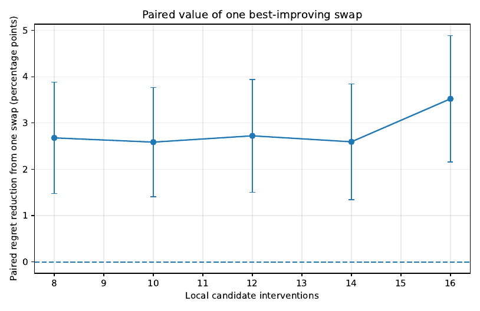
The implementation exposes both algorithms. Use ratio greedy when latency is dominant; add a single swap pass when the local candidate set is still small enough that the extra quadratic local work is acceptable.
Exact sharded resource feasibility
A global resource counter would be touched by every concurrent event and would therefore make all event write sets overlap. The architecture avoids that contradiction by partitioning resource budgets across controller shards before an allocation epoch.
Suppose global budget B is partitioned as
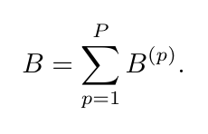
An event is routed to one shard and can reserve only against the shard-local ledger during that epoch. Because the shard allocation is already feasible globally, exact local reservation preserves global feasibility within the epoch.
Truly shared intervention objects that cannot be assigned to an agent owner are handled through the same serialized shard-ledger layer. They are not incorrectly hidden inside the exchangeable agent-owner collision calculation.
The corresponding implementation component is ShardBudgetLedger.
Concurrency uses the complete mutable footprint
Two events can execute without synchronization only when they do not create a mutable read/write conflict.
For an event, define an agent-owner footprint containing the owners of mutable state that is read or written by that event. It includes, for example:
- responding state entries;
- cached neighbor state entries that are read;
- transition-memory entries touched by the event;
- agent-owned action state;
- other mutable agent-indexed local coordinates.
The collision model requires conditional independence of footprint locations given footprint sizes, together with exchangeability/uniformity over the owner population. Marginal exchangeability alone is not enough.
Under owner-independent routing, two sparse independent footprints have overlap probability of order |F_t||F_u|/N. If events are routed by owner into P balanced shards, the relevant owner population within a shard is approximately N/P, producing a factor-P penalty relative to the global uniform calculation.
Independence of footprint locations is required for this collision argument; the footprint sizes themselves need not be independent for the later second-moment bound.
Measured overlap
With four responders and degree-eight local touched sets:
| N | 2 concurrent | 4 concurrent | 8 concurrent |
|---|---|---|---|
| 10,000 | 0.0652 | 0.3176 | 0.8240 |
| 30,000 | 0.0228 | 0.1288 | 0.4328 |
| 100,000 | 0.0068 | 0.0412 | 0.1556 |
| 300,000 | 0.0028 | 0.0124 | 0.0488 |
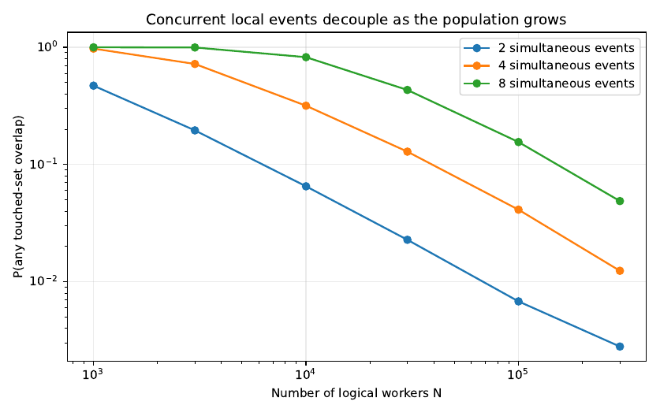
The finite-size constant matters. A cascade-sized footprint around 205 agents can make the simple overlap bound poor even when the asymptotic factor is 1/N. Concurrency is therefore tied to the actual footprint second moment, not merely to graph degree.
Conditional mutual information is a diagnostic, not the default gate
For a potential local edge j -> i, the implementation estimates
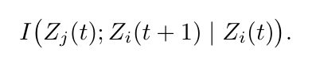
If this conditional mutual information is zero, the neighbor contributes no additional one-step predictive information once the target's own state is known.
The implementation uses a plug-in estimator with a permutation-null threshold.
The paper also connects small CMI to small one-step decision value through the standard Pinsker/Bayes-risk argument. The important limitation is that this is a one-step statement; it is not a cumulative sequential-control regret guarantee.
Edge recovery
Synthetic edge recovery improved with samples:
| samples/edge | precision | recall | AUC |
|---|---|---|---|
| 20 | 0.381 | 0.070 | 0.546 |
| 50 | 0.387 | 0.105 | 0.645 |
| 100 | 0.513 | 0.165 | 0.609 |
| 200 | 0.610 | 0.385 | 0.792 |
| 500 | 0.888 | 0.568 | 0.901 |
| 1000 | 0.800 | 0.911 | 0.972 |
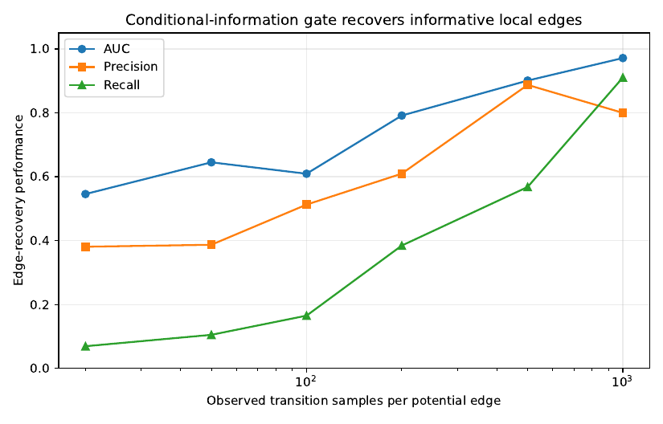
But the systems result is negative.
At 1000 samples per potential edge, the CMI gate reduced about 36 structural candidate evaluations to about 13.18, but mean decision regret relative to the exact local optimum was about 6.53%. Evaluating the complete structural-local set with greedy gave about 3.83% mean regret in the corresponding comparison.
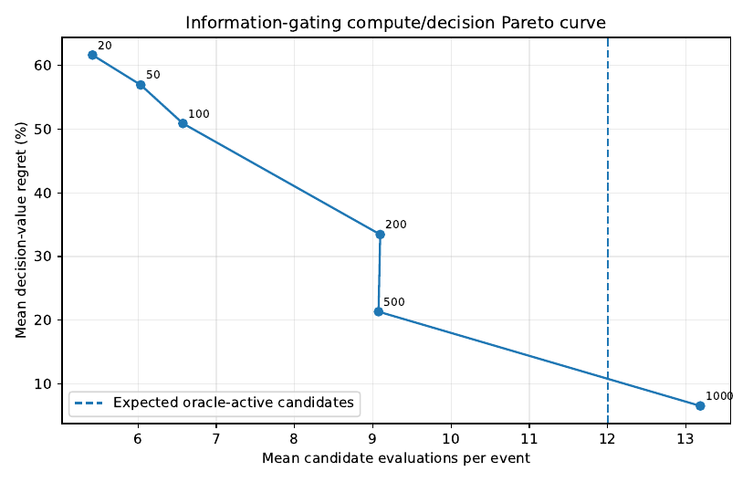
The sample acquisition cost is also severe. With four responders per event and uniform response frequencies,
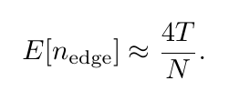
Five hundred expected samples per worker-specific edge therefore require roughly:
125,000events atN=1,000;1.25 millionevents atN=10,000;12.5 millionevents atN=100,000.
The default runtime therefore keeps the small structural candidate set rather than waiting for worker-specific CMI estimates. CMI is useful as a diagnostic, as a mature system refinement, or potentially as a way to calibrate spatial-dependence decay when statistics can be pooled across genuinely exchangeable agent classes.
Operation count is not physical independence from N
The algorithmic claim is intentionally narrower than "runtime is independent of N."
If response support and structural local work remain bounded, the number of arithmetic operations triggered by a normal event can remain approximately flat as N grows. The basic synthetic kernel demonstrates this:
| N | mean event latency | mean touched agents |
|---|---|---|
| 1,000 | 62.21 µs | 35.51 |
| 3,000 | 59.85 µs | 35.84 |
| 10,000 | 60.39 µs | 35.95 |
| 30,000 | 59.00 µs | 35.98 |
| 100,000 | 59.16 µs | 36.00 |
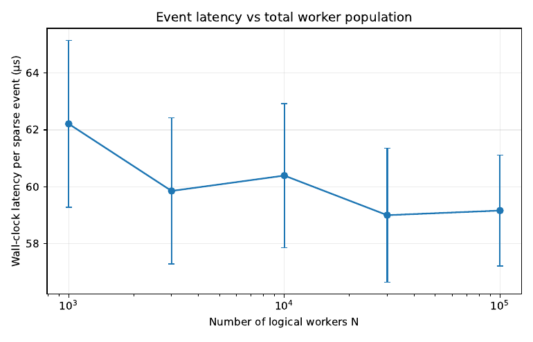
However, persistent per-agent state is still Theta(N). A real machine pays for cache misses, TLB behavior, memory capacity, allocator behavior, and random access into a larger backing array.
A fixed-local-work microbenchmark touched the same number of rows at every N, but grew the backing state from 0.06 MB to 183 MB. Median time rose from below one microsecond to roughly 2.7 µs/event.
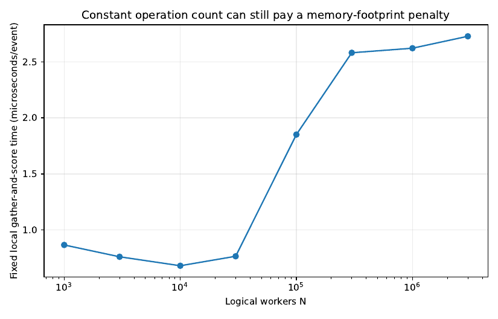
The integrated controller showed the same effect: its measured latency rose by roughly 40% across the tested population range even though the event-local arithmetic structure was unchanged.
The physically honest claim is therefore:
Event locality can make the operation count triggered by a normal event independent of installed population and can remove a large amount of unnecessary global work. It does not make the persistent state or the memory hierarchy independent of
N.
Queueing becomes the next bottleneck
Once the per-event algorithm is local, throughput is controlled by ordinary service capacity.
For event arrival rate lambda, mean service time E[S], and P controller shards,
the normalized offered load is
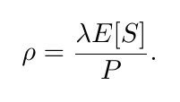
The queue experiment uses gamma service times so that the service distribution has a finite moment-generating function near zero, consistent with the tail analysis used in the paper.
For four shards:
| load | p95 wait / mean service | probability event waits |
|---|---|---|
| 0.70 | 1.05 | 0.414 |
| 0.80 | 1.87 | 0.588 |
| 0.90 | 4.01 | 0.779 |
| 0.95 | 7.60 | 0.887 |
| 0.98 | 15.93 | 0.952 |
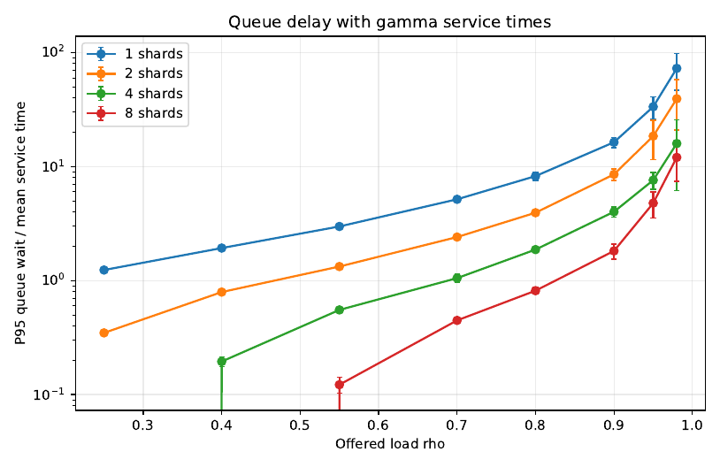
The architecture should therefore be provisioned well below saturation. Locality removes population-scale wasted work; it does not remove queueing theory.
Complete orchestration algorithm
The complete production-style algorithm is:
INPUT
structural neighborhoods N(i)
structural action neighborhoods A(i)
finite symbolic state alphabet Z
local transition priors
elapsed-time binning rule
forgetting rate rho
memory horizon H
shard-local resource budgets
conflict rules
application objective J_t
STATE
per-agent state posterior pi_i
cached local/neighbor summaries
SparseTransitionMemory for each agent
per-shard resource ledger
optional cascade diagnostic
ON PUSH EVENT t
receive responder set Omega_t
for each responding agent i in Omega_t:
compute elapsed time since i last responded
bin elapsed time
construct realized local context C_i,t
retrieve sparse transition record for C_i,t
lazily apply accumulated forgetting to empirical counts
combine transition prediction with new observation
update only pi_i
record the realized transition observation
evict expired keys using the local-response expiration deque
construct local candidate set
C_t = union_{i in Omega_t} A(i)
optionally:
apply a domain-supplied spatial radius
apply a hard cascade radius / affected-set cap
evaluate mature-system dependency diagnostics
score feasible local interventions
marginal gain Delta_j(A)
normalized resource use sum_r c_jr / B_r
score = Delta_j(A) / normalized_resource_use
run feasibility-preserving ratio greedy
optionally run one best-improving add/swap pass
atomically reserve required capacity from the event's shard ledger
dispatch selected interventions
construct complete mutable read/write owner footprint
process concurrently only with events that do not conflictThe companion reproducibility repository contains a compact Python reference implementation of these components:
memory.pyintervention.pysharding.pycascade.pycmi.pycontroller.py
What the final architecture deliberately does not do
The final runtime does not require:
- a global synchronized round;
- a global posterior or joint dynamic-programming table;
- a dense transition tensor;
- a population-wide action scan;
- automatic posterior diffusion across structural edges;
- submodularity;
- exact knapsack or exhaustive local action search;
- worker-specific CMI estimates at startup;
- a GPU;
- a particular internal agent model.
The two principal negative results are part of the design, not embarrassing side notes:
- structural adjacency did not justify automatic belief propagation;
- worker-specific CMI pruning required too much evidence and paid too much decision regret to be the default mechanism.
The architecture became simpler because those ideas were tested and removed.
Experimental map
The experiments are mechanism tests, not an application leaderboard. They ask whether the proposed operating regime behaves as intended and where it fails.
A. Population, response-support, and locality scaling
Underlying reproducibility tables:
scaling_vs_N.csvscaling_vs_response_sparsity.csvscaling_vs_locality_degree.csvlocal_vs_global_candidate_scan.csvfixed_local_work_memory_footprint.csvend_to_end_scaling_replicated_summary.csv
Main observations:
- the small local event kernel is effectively flat in
Nover1e3to1e5; - latency grows with the number of responders and locality degree;
- ignoring a known structural action contract creates a growing global-scan penalty;
- integrated wall-clock latency still rises with
Nbecause the backing state grows.
B. Cascade stress and operating regimes
Underlying reproducibility tables:
cascade_sizes_raw.csvcascade_scaling_summary.csvphase_boundary_raw.csvphase_boundary_summary.csvresponse_sparsity_cascade_raw.csvcollision_bound_write_set_sensitivity.csv
Main observations:
- adaptive attenuation stabilizes the mean cascade over the largest tested populations in the chosen synthetic regime;
- fixed attenuation and no forgetting produce much larger affected sets;
- sufficiently high degree and coupling produce clearly extensive behavior;
- cascade-sized footprints can destroy practical event-level parallelism even though the asymptotic collision factor still contains
1/N.
C. Sparse memory, forgetting, eviction, and time bins
Underlying reproducibility tables:
sparse_context_storage.csveviction_memory_growth.csveviction_rho_h_joint_raw.csveviction_rho_h_joint_sweep.csvtheoretical_eviction_horizons.csvonline_transition_learning_drift.csvtime_binning_raw.csvtime_binning_summary.csv
Main observations:
- sparse allocation avoids the formal dense context tensor;
- explicit eviction is necessary to stop lifetime key growth;
- eviction and forgetting must be tuned jointly;
- moderate forgetting helps after drift;
- coarse elapsed-time bins are sufficient in the tested process.
D. Local action selection
Underlying reproducibility tables:
greedy_vs_exact.csvconstrained_greedy_raw.csvconstrained_greedy_summary.csvgreedy_swap_paired_raw.csvgreedy_swap_paired_summary.csv
Main observations:
- local greedy is far cheaper than exhaustive local search;
- gain/resource scoring was the best of the tested simple constrained rules;
- one best-improving swap closes a meaningful part of the remaining gap while staying far below exhaustive-search cost at the larger tested candidate sets.
E. Asynchrony, CPU execution, and queueing
Underlying reproducibility tables:
async_vs_sync_throughput.csvmulticore_speedup.csvqueue_stability_gamma_summary.csvconcurrent_event_overlap.csv
At service-time coefficient of variation one, the asynchronous/barrier throughput ratio was about 5.34x in the scheduling stress test. Independent local rollouts achieved roughly 3x CPU speedup on four useful processes in the original runtime. Queue delay then becomes severe as offered load approaches one.
F. Integrated controller and propagation falsification
Underlying reproducibility tables:
end_to_end_metrics.csvend_to_end_*_trace.csvend_to_end_replications_raw.csvend_to_end_replications_summary.csvpaired_differences_t_intervals.csvpropagation_vs_coupling_raw.csvpropagation_vs_coupling_summary.csvpropagation_coupling_advantage.csv
The central result is the replicated failure of automatic cross-agent state propagation. Increasing the actual physical coupling in the environment did not produce a crossover in the tested range.
G. Conditional-information diagnostics
Underlying reproducibility tables:
cmi_edge_recovery_raw.csvcmi_edge_recovery_summary.csvcmi_candidate_reduction.csvcmi_gate_decision_tradeoff.csvcmi_sample_complexity_analytic.csvcmi_edge_sample_coverage.csv
The statistical edge detector becomes accurate after enough samples, but the evidence requirement scales poorly with population when each individual agent responds rarely. That is why CMI remains a diagnostic rather than the startup/default candidate gate.
Design interpretation
The final architecture is best summarized as
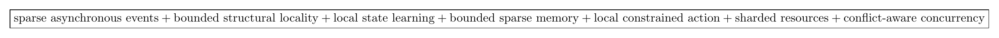
The main lesson is not that a 100,000-agent system somehow becomes a constant-sized physical object. It does not. The lesson is that a normal event involving four local agents should not be turned into a 100,000-agent computation unless the domain actually requires global coupling.
That separation also clarifies the remaining application burden. A concrete domain must justify at least one of the following:
- a bounded structural locality contract; or
- a sufficiently fast spatial-decay law that produces a useful local radius.
It must also provide a local marginal objective whose evaluation cost is compatible with the event budget, and it must operate in an arrival/cascade regime that the controller can provision.
The runtime mechanism cannot manufacture locality that the application does not have. What it can do is exploit locality aggressively when it is present, measure when its constants become large, and refuse to hide global behavior behind local notation.
Code and data
The complete reference implementation, fixed-seed CSV outputs, figure-regeneration scripts, unit tests, and fresh-run experiment scripts are maintained in the companion GitHub repository for this project. The Pages version is intentionally article-only so that it can be imported cleanly into Medium.
Selected related work
The project sits next to several established bodies of work but targets a different runtime question.
- Decentralized MDP/POMDP work makes the complexity of global decentralized sequential decision making explicit.
- Factored MDPs, coordination graphs, and DCOP exploit sparse interaction structure.
- Localized networked reinforcement learning studies conditions under which distant influence decays and local policies approximate global ones.
- Mean-field and graphon approaches address very large populations through population approximations rather than event-local exact ownership.
- Event-triggered control motivates computation/communication only when events occur.
- Actor systems and parallel discrete-event simulation provide the engineering precedent for asynchronous execution.
- Optimistic concurrency control motivates conflict detection through read/write sets.
- Mutual-information estimation provides a statistical diagnostic for whether a possible structural edge is predictively useful.
The implementation does not claim novelty for the basic fact that disjoint mutable footprints can commute. The contribution is the assembly and empirical pruning of these mechanisms for a massive asynchronous agentic runtime, including the negative results that remove automatic belief diffusion and startup CMI pruning from the default design.
References
- D. S. Bernstein, R. Givan, N. Immerman, and S. Zilberstein, “The complexity of decentralized control of Markov decision processes,” Mathematics of Operations Research, 27(4), 819–840, 2002.
- C. Guestrin, D. Koller, and R. Parr, “Multiagent planning with factored MDPs,” NeurIPS 14, 2001.
- C. Guestrin, S. Venkataraman, and D. Koller, “Context-specific multiagent coordination and planning with factored MDPs,” AAAI, 2002.
- P. J. Modi, W.-M. Shen, M. Tambe, and M. Yokoo, “ADOPT: Asynchronous distributed constraint optimization with quality guarantees,” Artificial Intelligence, 161, 149–180, 2005.
- R. Nair, P. Varakantham, M. Tambe, and M. Yokoo, “Networked distributed POMDPs,” AAAI, 2005.
- J. R. Kok and N. Vlassis, “Collaborative multiagent reinforcement learning by payoff propagation,” JMLR, 7, 1789–1828, 2006.
- F. Fioretto, E. Pontelli, and W. Yeoh, “Distributed constraint optimization problems and applications: A survey,” JAIR, 61, 623–698, 2018.
- D. V. Dimarogonas, E. Frazzoli, and K. H. Johansson, “Distributed event-triggered control for multi-agent systems,” IEEE TAC, 57(5), 1291–1297, 2012.
- L. Ding, Q.-L. Han, X. Ge, and X.-M. Zhang, “An overview of recent advances in event-triggered consensus of multiagent systems,” IEEE Transactions on Cybernetics, 48(4), 1110–1123, 2018.
- C. Nowzari, E. Garcia, and J. Cortes, “Event-triggered communication and control of networked systems for multi-agent consensus,” Automatica, 105, 1–27, 2019.
- G. Qu, A. Wierman, and N. Li, “Scalable reinforcement learning of localized policies for multi-agent networked systems,” L4DC, 2020.
- Y. Yang et al., “Mean field multi-agent reinforcement learning,” ICML, 2018.
- D. Lacker and A. Soret, “A label-state formulation of stochastic graphon games and approximate equilibria on large networks,” Mathematics of Operations Research, 48(4), 1987–2018, 2023.
- F. Zhou, C. Zhang, X. Chen, and X. Di, “Graphon mean field games with a representative player,” ICML, 2024.
- C. Hewitt, P. Bishop, and R. Steiger, “A universal modular ACTOR formalism for artificial intelligence,” IJCAI, 1973.
- K. M. Chandy and J. Misra, “Distributed simulation: A case study in design and verification of distributed programs,” IEEE TSE, 1979.
- D. R. Jefferson, “Virtual time,” ACM TOPLAS, 7(3), 404–425, 1985.
- H. T. Kung and J. T. Robinson, “On optimistic methods for concurrency control,” ACM TODS, 6(2), 213–226, 1981.
- L. Paninski, “Estimation of entropy and mutual information,” Neural Computation, 15(6), 1191–1253, 2003.
- K. Azuma, “Weighted sums of certain dependent random variables,” Tohoku Mathematical Journal, 19(3), 357–367, 1967.
- T. M. Cover and J. A. Thomas, Elements of Information Theory, 2nd ed., Wiley, 2006.